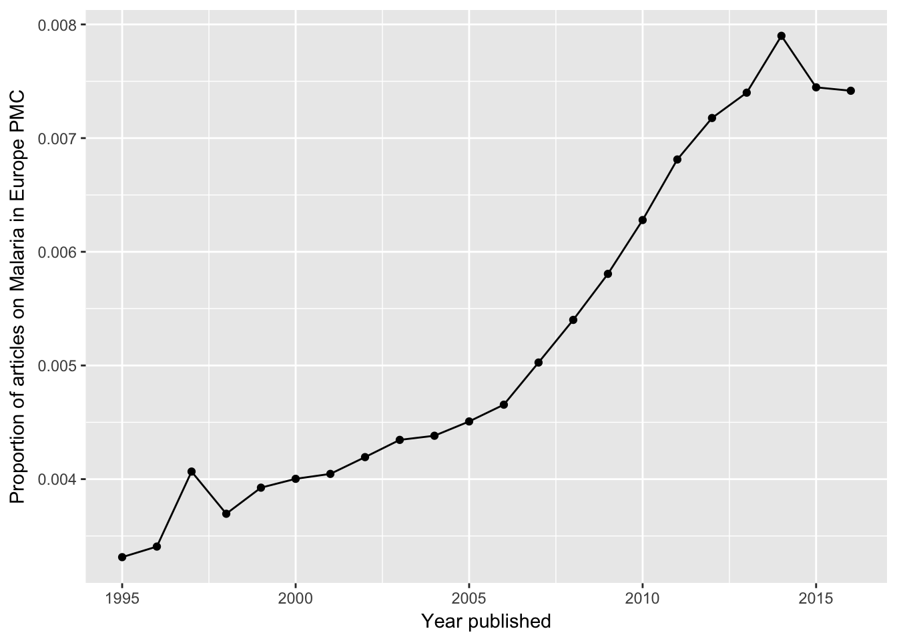

europepmc facilitates access to the Europe PMC RESTful Web Service.
Europe PMC covers life science literature and gives access to open access full texts. Europe PMC ingests all PubMed content and extends its index with other sources, including Agricola, a bibliographic database of citations to the agricultural literature, or Biological Patents.
For more infos on Europe PMC, see:
Europe PMC: a full-text literature database for the life sciences and platform for innovation. (2014). Nucleic Acids Research, 43(D1), D1042–D1048. doi:[10.1093/nar/gku1061](http://doi.org/10.1093/nar/gku1061)
Implemented API methods
This client supports the following API methods:
| API-Method | Description | R functions |
|---|---|---|
| search | Search Europe PMC and get detailed metadata |
epmc_search(), epmc_details()
|
| profile | Obtain a summary of hit counts for several Europe PMC databases |
epmc_profile(), epmc_profile_hits()
|
| citations | Load metadata representing citing articles for a given publication | epmc_citations() |
| references | Retrieve the reference section of a pubication | epmc_refs() |
| databaseLinks | Get links to biological databases such as UniProt or ENA |
epmc_db(), epmc_db_count()
|
| labslinks | Access links to Europe PMC provided by third parties |
epmc_lablinks(), epmc_lablinks_count()
|
| textMinedTerms | Retrieve text-mined terms |
epmc_tm(), epmc_tm_count()
|
| fullTextXML | Fetch full-texts deposited in PMC | epmc_ftxt() |
| bookXML | retrieve book XML formatted full text for the Open Access subset of the Europe PMC bookshelf | epmc_ftxt_book() |
Installation
From CRAN
install.packages("europepmc")The latest development version can be installed using devtools package:
require(devtools)
install_github("ropensci/europepmc")Loading into R
library(europepmc)Search Europe PMC
The search covers both metadata (e.g. abstracts or title) and full texts. To build your query, please refer to the comprehensive guidance on how to search Europe PMC: http://europepmc.org/help. Simply provide your query in the Europe PMC search syntax to epmc_search().
europepmc::epmc_search("Lagotto Romagnolo")
#> # A tibble: 39 x 27
#> id source pmid doi
#> <chr> <chr> <chr> <chr>
#> 1 28583040 MED 28583040 10.1177/0300985817712793
#> 2 25945683 MED 25945683 10.1111/jvim.12611
#> 3 24354474 MED 24354474 10.1111/vru.12129
#> 4 17552452 MED 17552452 10.1111/j.1939-1676.2007.tb02991.x
#> 5 17490444 MED 17490444 10.1111/j.1748-5827.2006.00298.x
#> 6 29056526 MED 29056526 10.1016/j.beproc.2017.10.009
#> 7 27525650 MED 27525650 10.1371/journal.pone.0161005
#> 8 29166669 MED 29166669 10.1371/journal.pone.0188543
#> 9 25875846 MED 25875846 10.1371/journal.pgen.1005169
#> 10 26316206 MED 26316206 10.1186/s12917-015-0463-0
#> # ... with 29 more rows, and 23 more variables: title <chr>,
#> # authorString <chr>, journalTitle <chr>, issue <chr>,
#> # journalVolume <chr>, pubYear <chr>, journalIssn <chr>, pageInfo <chr>,
#> # pubType <chr>, isOpenAccess <chr>, inEPMC <chr>, inPMC <chr>,
#> # hasPDF <chr>, hasBook <chr>, citedByCount <int>, hasReferences <chr>,
#> # hasTextMinedTerms <chr>, hasDbCrossReferences <chr>,
#> # hasLabsLinks <chr>, hasTMAccessionNumbers <chr>,
#> # firstPublicationDate <chr>, pmcid <chr>, hasSuppl <chr>By default, epmc_search() returns 100 records. To adjust the limit, simply use the limit parameter.
See vignette Introducing europepmc, an R interface to Europe PMC RESTful API for a long-form documentation about how to search Europe PMC with this client.
Creating proper review graphs with epmc_hits_trend()
There is also a nice function allowing you to easily create review graphs like described in Maëlle Salmon’s blog post:
tt_oa <- europepmc::epmc_hits_trend("Malaria", period = 1995:2016, synonym = FALSE)
tt_oa
#> # A tibble: 22 x 3
#> year all_hits query_hits
#> <int> <dbl> <dbl>
#> 1 1995 448144 1485
#> 2 1996 457900 1560
#> 3 1997 455662 1853
#> 4 1998 473286 1749
#> 5 1999 492990 1935
#> 6 2000 531375 2127
#> 7 2001 544462 2203
#> 8 2002 560839 2352
#> 9 2003 587527 2553
#> 10 2004 627139 2748
#> # ... with 12 more rows
# we use ggplot2 for plotting the graph
library(ggplot2)
ggplot(tt_oa, aes(year, query_hits / all_hits)) +
geom_point() +
geom_line() +
xlab("Year published") +
ylab("Proportion of articles on Malaria in Europe PMC")
For more info, read the vignette about creating literature review graphs:
https://ropensci.github.io/europepmc/articles/evergreenreviewgraphs.html
Re-use of europepmc
Chris Stubben (@cstubben) has created an Shiny App that allows you to search and browse Europe PMC:
Other ways to access Europe PubMed Central
Other APIs
- Data dumps: https://europepmc.org/FtpSite
- OAI service: https://europepmc.org/OaiService
- SOAP web service: https://europepmc.org/SoapWebServices
- Grants RESTful (Grist) API: https://europepmc.org/GristAPI
Other R clients
- use rOpenSci’s
oaito get metadata and full text via Europe PMC’s OAI interface: https://github.com/ropensci/oai - use rOpenSci’s
rentrezto interact with NCBI databases such as PubMed: https://github.com/ropensci/rentrez - rOpenSci’s
fulltextpackage gives access to supplementary material of open access life-science publications in Europe PMC: https://github.com/ropensci/fulltext
Meta
Please note that this project is released with a Contributor Code of Conduct. By participating in this project you agree to abide by its terms.
License: GPL-3
Please use the issue tracker for bug reporting and feature requests.